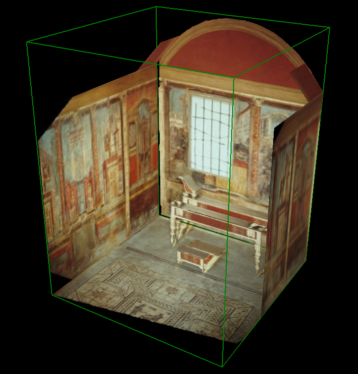
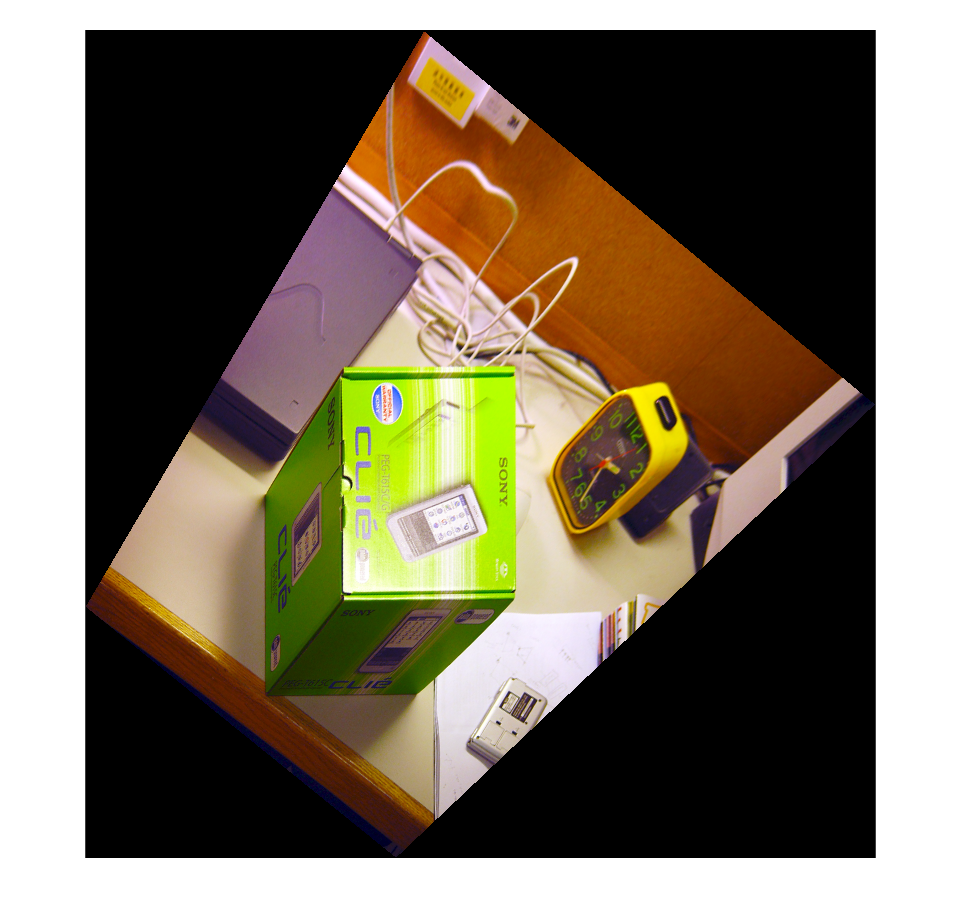
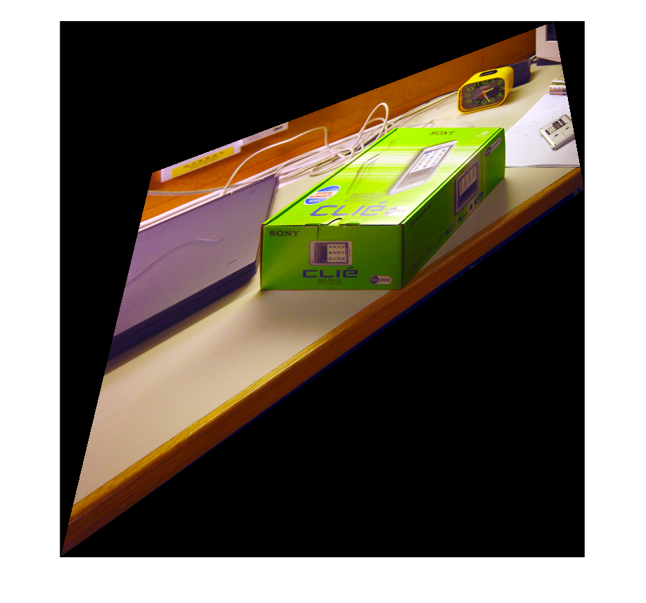
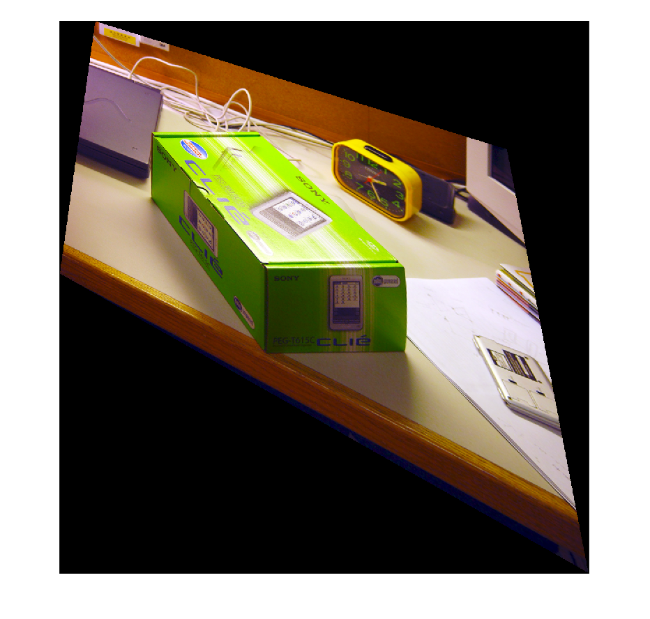
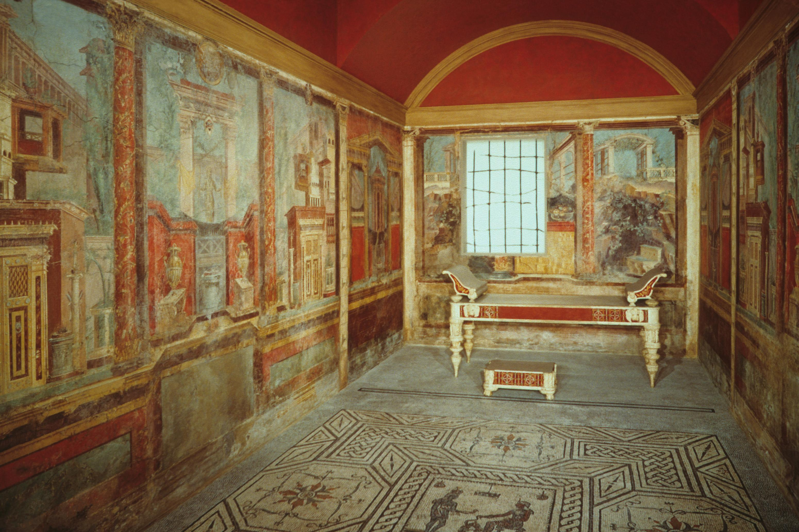
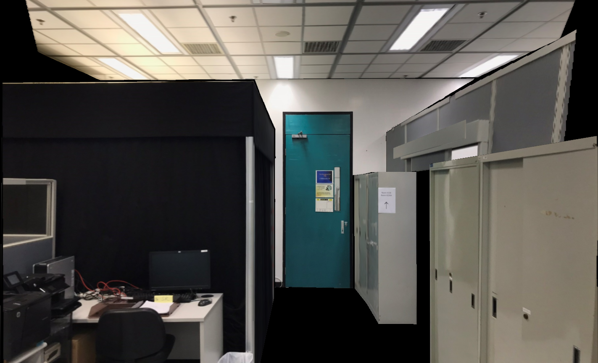
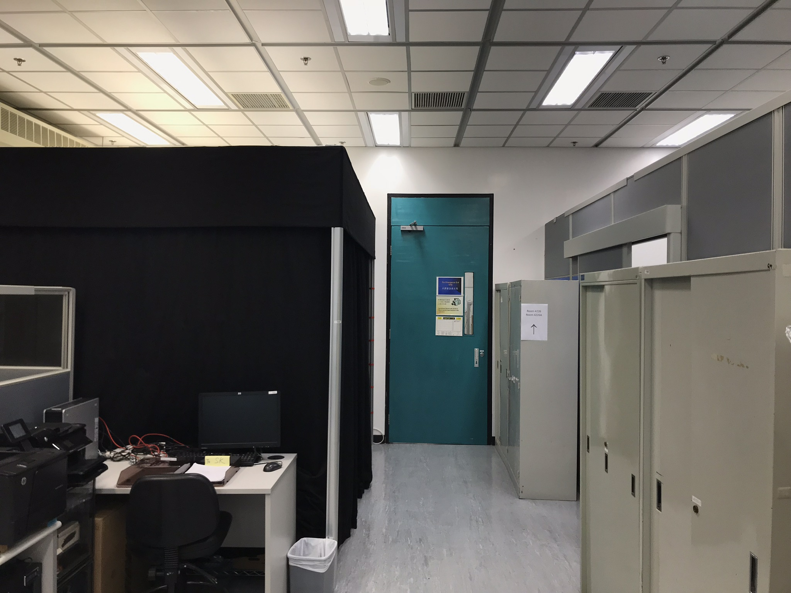

In this project we create 3D texture-mapped models from a single image using the single view modeling method discussed in class.
We build 3D models from both painting and real world image, with each model contains at least 10 text features. view3dscene is utilized to visualize the VRML model.
The whole program mainly consists of the following steps.
Bob collins' algorithm is used to compute vanishing points.
For example, to compute the vanishing point x, we first select a group of lines that are all parallel to the x axis and compute the following "second moment" matrix M
After choosing the origin point, it is essential to choose the proper reference points and set the scalar, which will directly affect the computation of transformation matrix.
By default, we choose three reference points respectively from x, y and z axis that are pre-defined by the user, and input appropriate scalars.
If the real scalar(dimension) is not accessible, a oil painting, for example. We can simply treat all axis as unit dimension.
To calculate the height of a certain object in the image, we utilize the following equation.
After getting all desird transformation matrix, it is time to do the image tranformation. imwarp is used to do so.
| Hxy | Hyz | Hxz |
|  |  |  |
We have implemented our algorithm to a Second Pompeian Style Roman wall painting, where 10 textures are obtained and displayed in below.
Front wall, left wall, right wall, floor, desk frontface, desk topface, chair frontface, chair topface and two arch-like ceilings.
| Artifact | Source Image |
|  |
However, the scales of the object is misinterpreted due to lack of measurement in the real scene.
We have tested the program on a photo shot in a laboratory, where 10 textures are obtained and displayed in below.
Three cases and one barrier on the right, front door and wall, two left curtains and ceiling.
| Artifact | Source Image |
|  |  |
Since we have roughly measured the dimensions of the objects in the real world scene, this artifact is more vivid.
The END